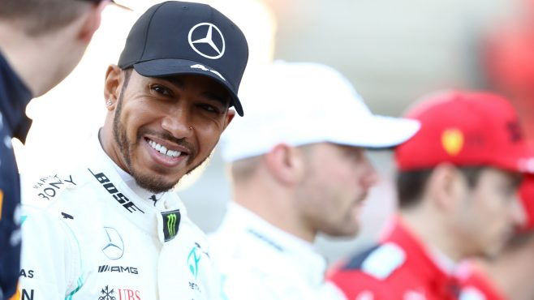

Making sense of the 5 biggest trending topics from pre-season testing.

F1 pre-season testing can often throw up more questions than it answers. So, after six days of running at the Circuit de Barcelona-Catalunya, we’ve picked out the five hottest topics doing the rounds at this year's winter tests, and tried to make some sense of it all ahead of the season-opener in Australia.
What's the story?
The onboard cameras fitted to the Mercedes W11 on Thursday morning of Week 1 picked up some weird activity going on in the cockpit, as Lewis Hamilton yanked and pushed on his steering wheel to alter the toe angle of the front wheels – with speculation that the DAS, or Dual Axis Steering system (as it’s known), would help reduce front tyre cooling on the straights, particularly useful at tracks like Sochi, Yas Marina and Baku.
What are people saying?
Find out more....
Hamilton ‘concerned’ by Mercedes power unit reliability ahead of Australia
Mercedes may appear to be the team to beat based on the evidence from 2020 pre-season testing at the Circuit de Barcelona-Catalunya. But power unit issues across both weeks of the test have sowed some seeds of doubt in members of the team ahead of the fast-approaching season opener in Melbourne – not least driver Lewis Hamilton.
Hamilton was forced to stop out on track midway through the second day of Week 2, limiting him to just 14 laps for the day. And after Mercedes traced the problem back to an oil pressure anomaly, the six-time champ admitted there was tension within the Silver Arrows camp about getting the problems fixed in time for Australia.
“Is it a concern? For sure,” said Hamilton. “Normally in pre-season testing, we've got much more confidence in the reliability, so it's not been perfect for us. We're on our third engine already, so it's definitely not an easy or relaxed scenario for us. But I have every confidence in the Mercedes factory that they'll analyse and do the best they can over the next two weeks to make sure that we'll start off, again, on the right foot.
Find out more....